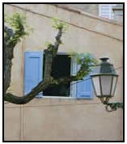

|
|
|
Notes analytiques en préparation Titre du poème : _______________________________ L’auteur : _______________________ Lisez le poème au moins trois fois, dont au moins une fois à haute voix. Qu’est-ce qui vous frappe ? _______________________________________________________________ Précisez la versification du poème :
Notez un aspect frappant du rythme (coupe, enjambement, rejet, contre-rejet, etc.), et précisez ce qui vous frappe : ____________________________________________ Notez une figure de style : vers _____ / ________________________________________ Précisez-en votre interprétation : _______________________________________________ Notez un effet poétique (rime frappante, allitération, assonance, rythme, etc.) : ______________________________________________________________ Qu’est-ce que vous ne comprenez pas, ou qu’est-ce que vous voudriez discuter ? Précisez une vraie question que vous voudriez peut-être poser aux collègues qui présentent ce poème : _____________________________________________________________ |